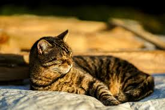

Learning Web Standards
Cat
Why I Love Cats
Cats are my favorite pet. I've had multiple cats and dogs growing up.
I currently have two cats named Mango and Delilah
A cat's noseprint is as unique as human fingerprints.
Cats communicate with their body language from their stance to even how poofy their tail is